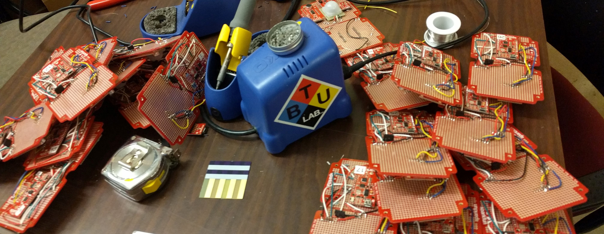

Red Hat IoT Project
The aim of this project, working title "eyeCU", is to create a platform for designing secure DIY IoT projects that are able to safely send data over public networks.
In order to build this platform we needed experimental devices, so we created the "health of the campus" project. Each eyeCU device contains parkfun sensors that monitor air quality (using the environmental combo board) and pedestrian traffic (using sound, luminosity, and motion sensors). We hope to highlight and improve areas of the campus that have poor air quality but high traffic.
We partnered with graduate students in the ITP Network Security program to build a back end that each device sends its data to over the campus WiFi.
I worked to design and build the devices, which use an ESP8266 Thing Dev Board to communicate the sensor data with the back end, as well as deploy them across the campus.
The project is ongoing, and the data can be viewed in real time at the eyeCU website.